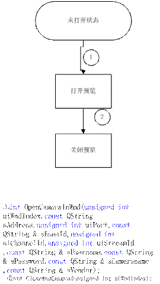

编辑人：冯明创
编辑日期：2013/12/26
插件简介：
插件名称：预览插件
插件功能：实现预览+手动录像功能
接口说明：
简述：提供页面事件绑定
输入参数：
sEvent：事件名称
sProc：页面响应事件函数
void AddEventProc( const QString sEvent,QString sProc ){m_mapEventProc.insertMulti(sEvent,sProc);};
简述：跳转到下一页
void nextPage();
简述：跳转到前一页
void prePage();
简述：获取当前页数
返回值：
-1：获取失败
int：当前页数
int getCurrentPage();
简述：获取分屏数
返回值：
-1：获取失败
int：总分屏数
int getPages();
简介：设置分屏模式
输入参数：
可选值：div1_1|div2_2|div3_3|div4_4|div5_5|div6_1|div7_7|div8_1||div8_8
返回值：
0：设置成功
1：设置失败
int setDivMode( QString divModeName );
简介：获取当前分屏模式
返回值：
QString getCureentDivMode();
简介：获取当前窗口的索引
返回值：
int：返回当前窗口的索引号
int GetCurrentWnd();
简介：播放视频
输入参数：
uiWndIndex：窗口索引号
sAddress：设备ip地址
uiPort：设备端口
sEseeId：设备易视网id
uiChannelId：请求打开的通道号
uiStreamId：请求的码流id
sUsername：用户名
sPassword：用户密码
sCameraname：通道名
sVendor：厂商信息
返回值：
0：打开成功
1：打开失败
int OpenCameraInWnd(unsigned int uiWndIndex
,const QString sAddress,unsigned int uiPort,const QString & sEseeId
,unsigned int uiChannelId,unsigned int uiStreamId
,const QString & sUsername,const QString & sPassword
,const QString & sCameraname
,const QString & sVendor);
简介：设置播放视频参数
输入参数：
uiWndIndex：窗口索引号
sAddress：设备ip地址
uiPort：设备端口
sEseeId：设备易视网id
uiChannelId：请求打开的通道号
uiStreamId：请求的码流id
sUsername：用户名
sPassword：用户密码
sCameraname：通道名
sVendor：厂商信息
返回值：
0：设置成功
1：设置失败
int SetCameraInWnd(unsigned int uiWndIndex
,const QString sAddress,unsigned int uiPort,const QString & sEseeId
,unsigned int uiChannelId,unsigned int uiStreamId
,const QString & sUsername,const QString & sPassword
,const QString & sCameraname
,const QString & sVendor);
简介：关闭指定索引窗口的视频
输入参数：
uiWndIndex：窗口索引号
返回值：
0：关闭成功
1：关闭失败
int CloseWndCamera(unsigned int uiWndIndex);
简介：获取当前窗口的状态
输入参数：
uiWndIndex：窗口索引号
返回值：
0：已连接
1：正在连接
2：未连接
3：正在断开
int GetWindowConnectionStatus(unsigned int uiWndIndex);
==============手动录像接口===================
接口简介：开始进行本地录像
返回值：
0：成功
1：失败
int StartRecord();
接口简介：停止本地录像
返回值：
0：成功
1：失败
int StopRecord();
插件抛出事件：
@1
抛出条件：连接状态发生改变时
事件名称：CurrentStateChange
事件参数
CurrentState ：转变后的状态号
WPageId：抛出状态的窗口索引
CurrentState取值：
0 STATUS_CONNECTED,
1 STATUS_CONNECTING,
2 STATUS_DISCONNECTED,
3 STATUS_DISCONNECTING,
@2
抛出条件：鼠标按下时
事件名称：CurrentWindows;
事件参数：
Wid:当前窗口的索引号
wid取值：
0 ：表示第一个窗口，依次类推
页面调用接口时序：
@1预览功能：
